3.3.2. SE5、SE7使用问题¶
3.3.2.1. SE5支持的外围设备有哪些？¶
答：请参考产品手册，或联系技术支持人员。 .. TODO
3.3.2.2. SE5维护窗里的Micro-USB如何使用，如何通过串口进入系统？¶
将 Mcro-USB 线与电脑连接：
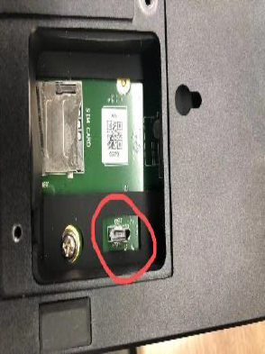从 https://www.silabs.com/developers/usb-to-uart-bridge-vcp-drivers 下载cp2102的驱动，安装后就有串口显示：
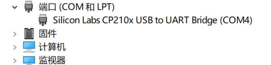配置com口属性，115200, 8-N-1：
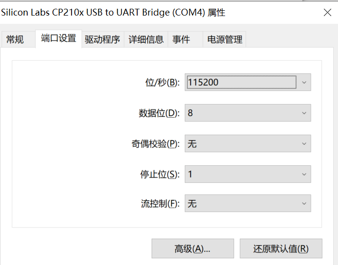下载teraterm软件， 选择连接 comX(本例com4), 点击OK：
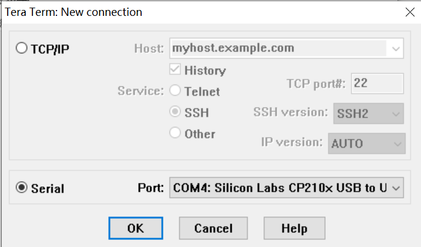在Setup—Terminal，将Speed改为115200：
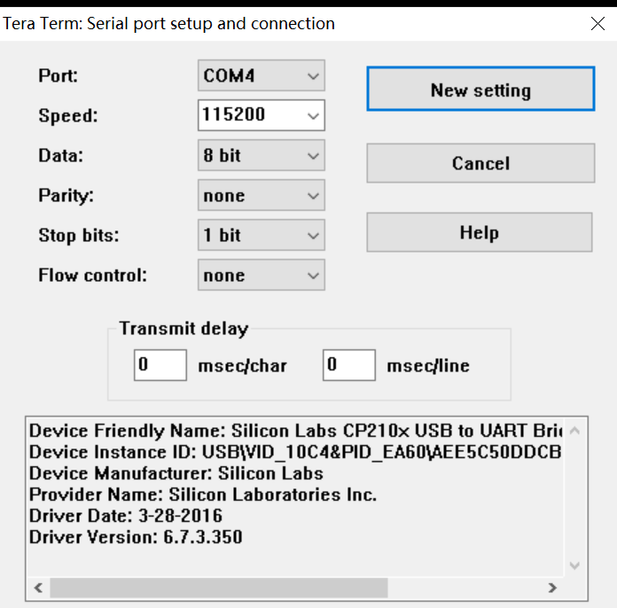SE5开机运行就会显示：
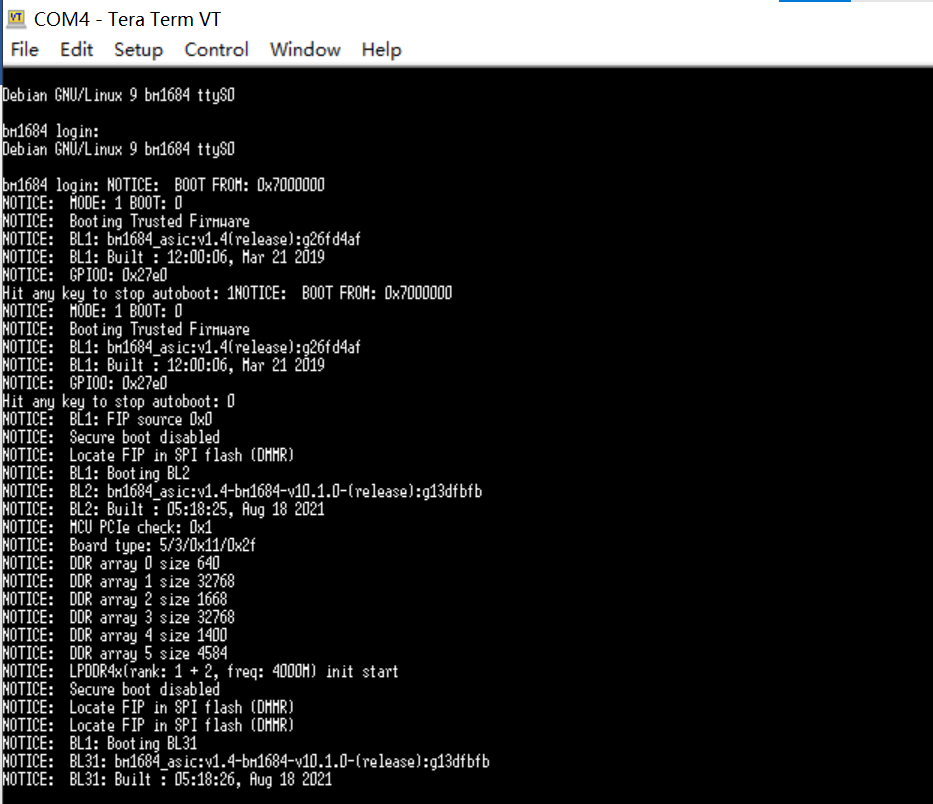
3.3.2.3. SE7 如何通过串口进入系统？¶
3.3.2.4. SE9 如何通过串口进入系统？¶
3.3.2.5. 若系统故障，无法进入SoC的操作系统，该如何升级或恢复固件？¶
应当使用SD卡刷的方式重新刷机。若SD卡刷机不成功，或仍旧无法进入系统。请尝试使用 SE5,SE7 紧急修复启动包： https://developer.sophgo.com/thread/586.html
3.3.2.6. 如何在Python中使用SAIL？¶
方法1. 使用sail包中编译好的whl文件，路径在 sophon-sail/python_wheels/<arch>/libsophon-<0.x.x>_sophonmw-<0.x.x>/py3x 文件夹中。 需要选择当前/opt/sophon下的libsophon和sophon-opencv(sophon-ffmpeg)的版本。
方法2. 按照《SOPHON-SAIL用户手册》重新交叉编译sail的whl包，并安装。
3.3.2.7. SE5安装openVPN？¶
答：只需要打开CONFIG_TUN，直接修改文件https://gitee.com/sophon-ai/bsp-sdk/blob/master/linux-linaro-stable/arch/arm64/configs/bitmain_bm1684_asic_defconfig， 确认最后一行CONFIG_TUN=y，再按照 sm5手册 的第6章重新编译kernel。不需要用make menuoconfig去找。
3.3.2.8. 如何通过串口查询SE5、SE7的IP地址¶
答：1、宿主机为Linux时：使用Ubuntu连上SE5、SE7串口之后，在Terminal输入命令ping bm1684.local可以查看到盒子IP。
2、宿主机为Windows时：通过串口工具(推荐teraterm、mobaxterm、windterm等软件)，需要安装驱动程序（直接在网上找CP210x驱动），安装好驱动之后，使用串口工具连接登录 linaro/linaro，然后使用ip addr show命令查看IP。
3.3.2.9. SE5经常自动重启，大约十几分钟到二十分钟左右重启一次？¶
答： #. 如果仍然有问题看下硬盘各分区的使用情况，之前遇到过有些分区快满的时候，就会重启。
3.3.2.10. SE5是否可以刷Ubuntu系统？有没有版本要求？¶
答：
客户没法自己随便安装系统，只能用我们发布的刷机包。目前我们使用ubuntu版本。
或者可以自行定制刷机包。
3.3.2.11. SE5盒子磁盘仍然有空间，但使用apt安装软件时或进行其他操作时，都会提示系统磁盘空间不足？¶
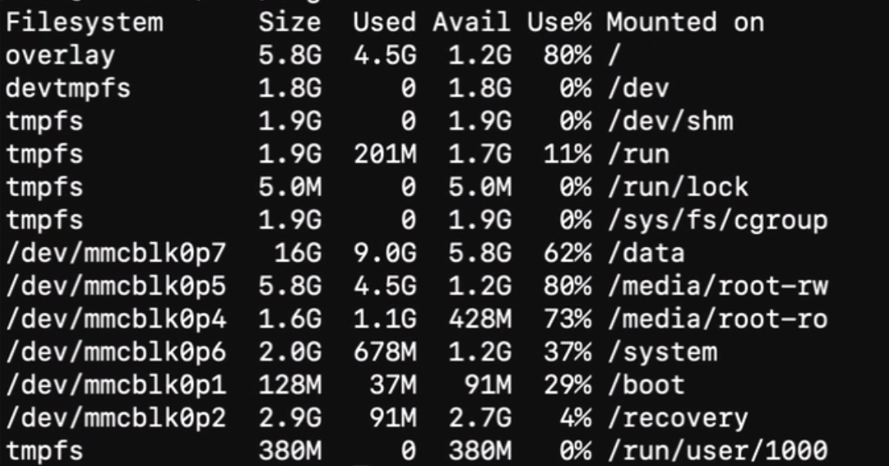 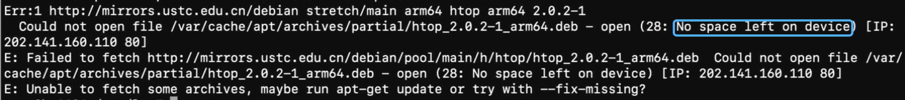答：通常这是由于node节点满了导致的，请使用`df -i`查看Inodes节点是否被用完，当磁盘中存在大量的小文件时，就容易发生这样的问题。可以使用扩大inodes节点数量或删除无用的小文件。
3.3.2.12. SE5、SE7、SE9盒子如何修改IP？¶
答：
修改配置文件：对于盒子来说，修改/etc/network/下的配置文件，eth0对应WAN口，根据实际修改；eth1对应LAN口，应保持static方式固定IP 192.168.150.1不变，方便系统维护时使用固定IP连接；
3.3.2.13. SE5盒子如何扩展存储空间？¶
答：
配有硬盘仓，支持 2.5 英寸 7mm 高度的 SATA 接口 HDD 或 SSD 硬盘，支持容量不超过 2TB；
不推荐 使用SD卡：SE5背部维护仓内部有SD卡插槽，速率 模式为 SDR104，最大容量 2TB；
USB接口连接外接硬盘，可临时使用，长期不推荐。
3.3.2.14. 如何实现扩展硬盘的开机自动挂载？¶
答：可查看《SE5/7 SSD开机自动挂载指定分区》教程：https://developer.sophgo.com/thread/579.html
推荐使用启动脚本或者systemd service的方式来实现扩展硬盘的开机自动挂载；您可以修改/etc/rc.local文件， 将挂载命令放在文件的末尾 exit 0 之前。我们不建议直接修改/etc/fstab文件，因为一旦挂载出现问题，系统将无法启动。 为了安全起见，SE5中/etc/fstab文件不能随意修改，每次开机时只读分区的/media/root-ro/ fstab.emmc.ro会自动替换/etc/fstab。 （若您一定要修改fstab文件，请先sudo mount -o remount rw /media/root-ro将分区修改为可写； 然后修改 fstab.emmc.ro 文件；修改完成后，请再将分区修改回只读属性。）（如果因挂载问题出现系统无法启动的问题，请尝试使用SD卡刷的方式修复。）
3.3.2.15. 关于内核版本以及增加内核模块？¶
问：我拿到的这个盒子上uname -r拿到的版本和实际的内核模块版本不一致，另外我想加几个内核模块，盒子上源码目录下是空的，是不是需要你们帮忙重新编下内核
答：内核版本和/lib/modules不一致，说明那个盒子应该是从某个比较老的版本，通过替换内核镜像的方式升级的，所以只有内核更新了，/lib/modules没有更新。建议您用我们的卡刷包重新刷一下，就一致了。 如果您想添加内核模块的话，可以参考https://gitee.com/sophon-ai/bsp-sdk，但是请了解如果您添加的kernel config对kernel API有比较大变化，会和我们以二进制形式发布的一些驱动不兼容。
3.3.2.16. SE5盒子中使用卡刷后，使用lsmod查看内核模块，比之前多了br_netfilter，它的作用是什么？和之前没有的盒子有什么区别？¶
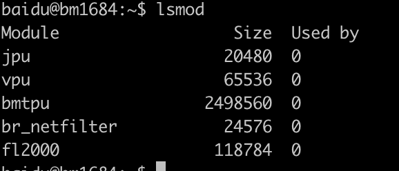答：安装使用k3s/k8s需要这个driver，是在某个版本开始加入的。另外，如果没有这个driver，说明盒子的固件比较老旧了，建议使用卡刷重刷一下固件，以免直接替换文件升级新版SDK后发现不可预期的问题。
3.3.2.17. k8s plugin 在哪里下载？¶
答：请联系我们的技术支持获取最新版本。
3.3.2.18. SoC中python如何使用OpenCV？导入sophon-opencv？¶
答：SoC建议使用我们改造过的sophon-opencv以获得硬件加速支持。设置环境变量即可：
# 设置环境变量
export PYTHONPATH=$PYTHONPATH:/opt/sophon/sophon-opencv_<x.y.z>/opencv-python
3.3.2.19. 使用ffmpeg命令时报错，找不到vpu驱动怎么办？¶
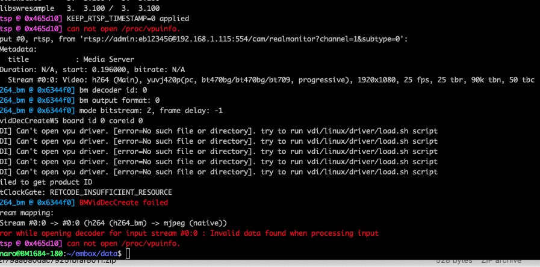#. lsmod查看所有的ko是否加载，正常情况下jpu、vpu、bmtpu、fl2000等4个ko加载成功;若没有加载成功，请联系技术支持或用卡刷修复系统。 .. #. 对于没有加载的ko，进入/system/data目录下手动加载查看是否报错。若报错，原因可能是升级过内核，内核和ko不匹配，建议使用卡刷修复系统。
3.3.2.20. 使用hdmi连接显示器，过一会儿不显示黑屏的问题¶
请参考《算能SOC模式设备FL2000&MS9132使用流程》 。此文档请联系算能技术支持获取。
3.3.2.21. SoC查看内存使用情况？¶
答：
查看系统内存：
free -h
查看ION内存(SE5、SE7)如下，SE9请参考 SoC设备状态信息常用命令
NPU内存使用情况：
cat /sys/kernel/debug/ion/bm_npu_heap_dump/summary | head -2
VPU内存使用情况：
cat /sys/kernel/debug/ion/bm_vpu_heap_dump/summary | head -2
VPP内存使用情况：
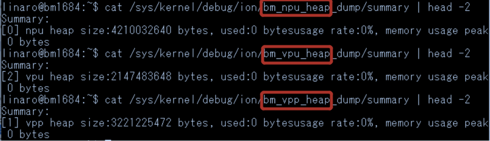cat /sys/kernel/debug/ion/bm_vpp_heap_dump/summary | head -2
如上，通常SE5、SE7会有3个ION heap(即三块预留的内存区域)，如名字所示，分别供TPU、VPU、VPP使用。以上示例中只打印了每个heap使用信息的开头，如果完整地cat summary文件， 可以到其中分配的每块buffer的地址和大小信息
3.3.2.22. SE5盒子的配置方法¶
SE5盒子有两种配置方式：
SE5直连电脑：
链接SE5 WAN口至电脑端LAN口
配置电脑ip地址至192.168.150.1同网段下
ssh至192.168.150.1，初始账户名密码在机身下方
1# 例如
2ssh linaro@192.168.150.1
3# 输入密码linaro
SE5通过路由器或交换机连接：
连接SE5端的WAN口至路由器或交换机
从路由器或交换机连接至电脑端LAN口
配置电脑ip至192.168.150.1同网段
ssh至192.168.150.1，初始账户名密码在机身下方
查看SE5盒子的WAN口ip地址，以用来远程连接